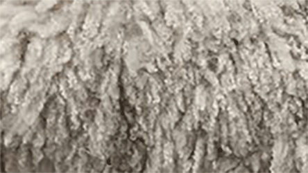
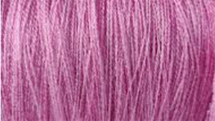
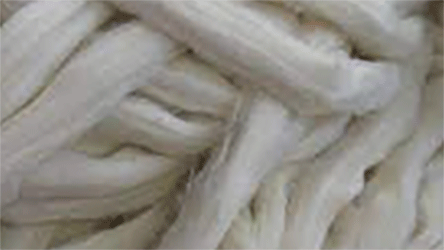

There are a lot of factors to consider when choosing the materials for your project. Here’s some information to help you make decisions:

| Pros: | Cons: |
|---|---|
| Warm | Itchy |
| Breathable | Prone to pilling |
| Easy Care |

| Pros: | Cons: |
|---|---|
| Inexpensive | Less breathable |
| Easy to find | Can melt at high heat |
| Machine washable and dryable | Holds stains and odors more |

| Pros: | Cons: |
|---|---|
| Lightweight | Prone to pilling |
| Breathable | Tendency to split when crocheting |
| Low Cost | |
| Lots of colors |
Aluminum
Wood
Plastic
The recommended hook size is shown when you purchase yarn, but different sized hooks can give you a different look to your project.
Pros: Stretch Thinner product Cons: Can look messier More flimsy product
Pros: More Sturdy Smaller holes Cons: Takes longer to make Has no stretch